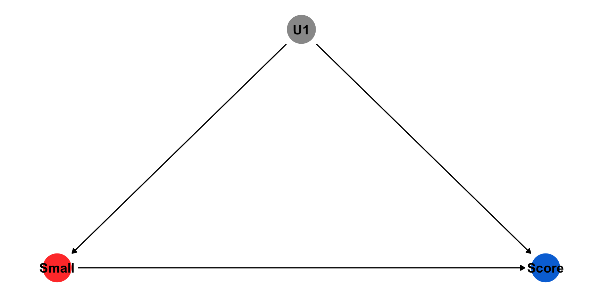

Comparisons are at the heart of quantitative analysis
Lots of bad analysis implies comparisons, but doesn’t actually make them
Ex. 10 things that extremely successful people do to be productive
Ex. 70% of participants reported an improvement
Correlation is the most basic tool for making comparisons with data
Making comparisons is one of the most essential parts in research, underpinning everything from simple descriptive studies to machine learning and impact evaluations. It is difficult to learn without comparison. For example, an article that identifies 10 habits of successful people might seek to provide guidance on what behaviors you can adopt to become more successful. However, we should also ask how common these behaviors are among people who are not successful. Similarly, an evaluation might point out that 70% of organizations that participated in a capacity-building intervention reported an improvement in their capacity over the course of the intervention. But we should also ask whether these improvements were larger than improvements experienced by similar organizations that didn’t participate. Correlation is the fundamental tool that allows us to answer these important questions.
Correlations: Necessary Components
What do we need to calculate correlations?
Measures of central tendency
Mean
Proportion
Measures of spread
Variance
Standard deviation
In order to calculate correlations, we need to begin with quantities that we want to compare across groups. For example, we might want to calculate the mean, or the average, of a certain variable. We also need to measure how much variation, or spread, there is in these measures. Are the units in our sample very similar, or are their values spread our across a wide range?
Central Tendency: Mean
\mu_X = \frac{1}{n} \sum_{i}^{n} X_i
my_vector =rnorm(10, mean =10, sd =5)# Step 1: Sum the valuessum_values <-sum(my_vector)# Step 2: Count the number of elementscount_elements <-length(my_vector)# Step 3: Calculate the meanmean_value <- sum_values / count_elementsprint(mean_value)
[1] 12.07996
mean(my_vector)
[1] 12.07996
Everyone knows how to calculate the mean of a variable. In R, there are multiple ways to do it. Here, I created a random variable with 10 values and an average value of 10. You can calculate the mean by hand or using the function ‘mean()’. Both approaches should give you the same value.
Even with these basic measures, we’re already thinking about the distribution!
You’re also probably familiar with variance. Variance measures how spread-out the values of a variable are around the mean. For the variance of X, we take the sum of the squared differences between each value of X and the mean value of X, and then divide by the number of observations. While squaring the differences is necessary to avoid positive and negative values cancelling out one another, it poses challenges for interpretation. Most importantly, the variance is not on the scale of the variable, so there is no intuitive way to interpret its value. The squaring of the differences also means that more weight is put on observations that are very far from the mean value. The next few slides illustrates this with simulated data.
Spread: Variance
Create a vector
## Create vector, sort by size, and store varset.seed(123)dat =rnorm(10, mean =10, sd =5)dat =sort(dat)o_var =var(dat)print(dat)
First, we create simulated data with a known mean and standard deviation
Spread: Variance
Add a constant to a big number
## Create new dataframe for big addition and store vector lengthb_dat = datind =length(b_dat)## Add four to the largest number in the vector and calculate size of var increaseb_dat[ind] = b_dat[ind] +4b_var =var(b_dat)val = b_var - o_varcat("Variance increases by", val )
Variance increases by 8.890842
Second, we add 4 to the largest value of X and observe the change in the standard deviation
Spread: Variance
Add a constant to a smaller number
## Create new dataframe for small additions_dat = dat## Add four to the smallest number in the vector and calculate size of var increases_dat[ind-2] = s_dat[ind-2] +4s_var =var(s_dat)val = s_var - o_varcat("Variance increases by", val )
Variance increases by 3.316847
Finally, we add 4 to the smallest value of X and observe that the change in the standard deviation is much smaller. Again, this is because squaring the differences places more weight on extreme values very far from the mean
How far we expect each observation to be from the mean, on average
It is often desirable to report effect sizes as SDs
Another measure of spread is the standard deviation. The standard deviation is just the square-root of the variance, and tells us the average absolute difference between values of X fall and the mean of X. By applying the square-root, this measure of spread is now measured in the same units as the variable. When calculating correlations between two variables, it is often desirable to translate the size of the relationship into standard deviations.
Observe how changes in the standard deviation affect the shape of the distribution
In a new tab, open this interactive visualization of how changes in the standard deviation affect the shape of the distribution. Follow the instructions to see what increases in the spead of a variable looks like.
Now that we have reviewed the fundamental components of correlation, we can turn to the three primary ways of measuring correlation. Correlations rely on two variables, typically denoted as X and Y. The covariance is the product of of the deviations between values of our two variables and the mean of the variables. However, this measure can tell us about the direction but not the strength of the correlation. Next, we turn to the correlation coefficient, which normalizes the covariance by the product of the variables’ standard deviations, forcing them to take a bounded range that can tell us the strength and direction of correlation.
Finally, we can calculate the slope of a regression line, which normalized the covariance by the variance and tells us the expected change in Y when we observe a 1-unit increase in X.
Measures of Correlation
What does the correlation coefficient tell you that slope doesn’t?
Consistency of the relationship on bounded scale (-1 to 1)
What does slope tell you that the correlation coefficient doesn’t?
Substantive importance (magnitude)
Give an example of when you’d prefer each
Correlation: When comparing relationships on different scales
Slope: When thinking about ROI
Here’s a quick review of the concepts we just covered.
Correlation
What can with do with them?
Description: quantitative comparisons
Forecasting: sample population \rightarrow out-of-sample
Causal inference: correlation + research design
Simple, but powerful
Non-linearities, interactions, machine learning
These simple but powerful statistical tools perform much of the work in contemporary quantitative social science research, ranging from simple description, to forecasting, to causal inference. These simple linear correlation can be combined with squared terms to estimate non-linear relationships, iterations to estimate how a relationship between two variables is affected by values of other variables, or powerful research designs to make inferences about causal relationships.
Linear Regression Model
Y_i = \alpha + \beta X_i + \epsilon_i
What is \alpha?
What is \beta?
What is X_i?
What is \epsilon_i?
Linear regression models are often referred to as the “workhorse of the social sciences”. Whether it’s estimating difference in political opinions across demographic groups or calculating the causal effect of a randomized intervention, most analyses rely on linear regression. The most frequently used model is called “Ordinary Least Squares”. The most simple models consisten of an intercept (alpha), which estimates the average value of Y when the independent variable is at 0, the slope or coefficient (beta) for X, which captures the relationship between X and Y (the independent and dependent variables), and the error term (epsion) which captures the variance in Y that is not explained by the intercept and beta.
Linear Regression Model
Estimating model parameters
\hat{Y_i} = \hat{\alpha} + \hat{\beta} X_i
Coefficient
\hat{\beta} = \Delta{\hat{Y}} / \Delta{X}
Linear regression provides you with parameter estimates with which you can calculate the expected value of Y by adding together the terms on the right-hand-side of the equals sign in the model.
Minimizing the Residuals
What are residuals
\hat{\epsilon_i} = Y_i - \hat{Y_i}
How do we minimize them?
SSR = \sum_{i}^{N} \hat{\epsilon}_i^2
Ordinary least squares works by estimating parameter values the minimize the residuals of the model, which are the difference between each value of Y and the value predicted by the model based on the model parameters. As with our measures of variance, this is done using the sum of squared residuals, to avoid positive and negative differences from cancelling out.
Multiple regression works very similarly to simple linear regression, although interpretation becomes slightly more complicated. The intercept (alpha) is not the mean of Y when both independent variables (X1 and X2) are held at 0, while the value of B1 now captures the relationship between X1 and Y while X2 is held constant.
Quiz Questions
Which of the following statements describe a correlation?
Most professional data analysis took a statistics course in college.
The longer a person runs the more calories they burn.
People who live to be 100 years old typically take vitamins.
Older people vote more than younger people.
Causation
Schools of Thought
“We think of a cause as something that makes a difference, and the difference it makes must be a difference from what would have happened without it.” (Lewis, 1973)
Potential outcomes and counterfactuals (Econ)
DAGs and do-calculus (CS)
Manipulability (Philosophy)
While simple correlations can answer many important questions about the world, on their own, they cannot tell us anything about whether the relationship between X and Y is causal. We define causal relationships as a dependency whereby intervening on or manipulating the value of X while holding all other variables constant will result in a change in the value of Y. Causality is a central topic in philosophy of science, and there are many schools of thought around it. In social science research, most researchers focus on the Potential Outcomes framework.
Causality: Why bother?
Understanding cause and effect is how we change things in the real world
Causal inference separates good evaluations from bad
Policy change
Development intervention
Causal identification is not binary
It’s harder for some policies and interventions than others
Variety of tools that can help us rule out different threats to inference
As we’ll learn, it can be extremely difficult to estimate causal relationships in the social world. However, the ability to make positive change in the world requires an understanding cause and effect. However, most program evaluations cannot provide evidence of a causal impact and sometimes reliable causal inference is difficult or impossible.
We only observe any given unit in one treatment status at any one time so we can never directly observe the causal effect of a treatment on a unit.
While estimating the correlation between two variables is straightforward, understanding whether this correlation captures a causal relationship is much more difficult. This is due to the “fundamental problem of causal inference”, which arises from our inability to observe counterfactuals. We often think of causal relationships in terms of a counterfactual. Thinking about a causal relationship between a binary treatment variable D and an outcome Y, for any unit in our sample, we want to observe the value of Y in simultaneous worlds in which the unit does and does not receive the treatment D.
Potential Outcomes and Counterfactuals
Treatment Effect for individual i
TE_i = Y_i(1) - Y_i(0)
Average Treatment Effect (ATE)
ATE = \frac{1}{N} \sum_{i=1}^{N} TE_i
Observing these simultaneous counterfactual worlds for each unit in our sample would allow us to easily estimate the average treatment effect for units in our sample. However, this is impossible.
What’s the solution?
Estimating counterfactuals
Units in the control group serve as a stand-in for the counter-factual of the treatment group
While we can never directly observe a counterfactual, we can try to estimate it by using a credible research design. Causal inference methods attempt to do this by minimizing the probability of systematic differences between units that do and do not receive a treatment.
What’s complicated about this?
“Only valid when when the treatment and control group are comparable with respect to all the variables that might affect the outcome other than the treatment variable itself.”
“We must find or create a situation in which the treated observations and the untreated observations are similar with respect to all the variables that might affect the outcome”
“By randomly assigning treatment, we ensure that treatment and control groups are, on average, identical to each other in all observed and unobserved pre-treatment characteristics”
Units that have been exposed to the treatment can only serve as a valid counterfactual under very specific conditions. Under random assignment, the statistically most likely outcome is that treatment and control groups will not have any systematic differences that can confound our ability to estimate the treatment effect.
Can’t we just observe and compare?
In the real world, differences in units’ exposure to X is often driven by important differences that also affect those units’ values of Y. This is called “confounding”. When confounding is present, our estimates of the causal effect of X on Y will be biased, potentially creating the illusion of a causal relationship that doesn’t actually exist. Consider this example, where the NYT reported on a study that found a correlation between opera attendance and longevity. Here, the journalists inferred that this correlation was causal, meaning that by changing whether or not someone goes to the opera, you can change how long they live. However, there are many factors that confound this relationship, including income, which is correlated with both opera attendance and lifespan.
Can’t we just observe and compare?
Many very smart people do not understand the fundamental problem of causal inference, so having an appreciation for the challenges of causal inference and being able to communicate the challenges to others can be a huge advantage for researchers that want to help others learn about the world.
Can’t we just observe and compare?
Example: What is the effect of class size on test scores
Attaching package: 'ggdag'
The following object is masked from 'package:stats':
filter
Consider the challenge of estimating the effect of smaller class sizes on test scores. We want to know whether decreasing class sizes will cause an increase in the average test scores of students. We might start by looking at observational data on class size and test scores across a given district or country.
Can’t we just observe and compare?
However, even if we find a negative correlation between larger class sizes and higher test scores, we cannot assume that this relationship is causal. If there are any unobserved factors that are correlated with both class size and score, this will confound our estimates.
Can’t we just observe and compare?

This would create the appearance of a causal relationship, even if one does not actually exist.
Can’t we just observe and compare?
We might decide to collect data on additional characteristics of students and try to “control” for these potential confounders by including them in a multiple regression model. For example, it might be that wealthier students tend to be in schools with smaller class sizes. If you can control for parental wealth, we can remove this potential bias in your estimates.
Can’t we just observe and compare?
However, adding the wrong control variables to your model can also create bias. When your dependent and independent variables have an effect on another variable in your model, this creates collider bias, which can cause the illusion of a causal relationship between X and Y by adding a control. For example, smaller sample sizes might cause teachers to pay more attention to students. Higher test scores also might cause teachers to pay more attention to students. Controlling for the amount of attention students get from teachers would create the illusion of a relationship between class size and test scores even if one does not exist.
Can’t we just observe and compare?
In reality, we can never control for all potential confounders, and we can never be certain that potential confounders we can control for are not colliders. If this figure captures every potential confounder, controlling for Year, Location, and Wealth would allow us to estimate the true causal effect of class sizes on test scores.
Can’t we just observe and compare?
However, in this figure, if we added a control for Attention, that would introduce collider bias.
Can’t we just observe and compare?
And in this figure, no strategy will allow us to estimate a causal relationship because we don’t have data on U1 (hence it’s grey color).
Why can’t we just observe how units change over time?
Show code
library(ggplot2)Year =c(0,1,2,3)Outcome =c(NA, 1.3, 1.7,NA)Treatment =c("Control", "Control","Control","Control")dat =data.frame(Year, Outcome, Treatment)ggplot(data = dat, aes(x = Year, y = Outcome, group = Treatment, color = Treatment)) +geom_line(aes(linetype=Treatment),size=2) +geom_point(size =6) +scale_linetype_manual(values=c("solid")) +xlim(0,3) +scale_y_continuous(limits =c(1,1.85), breaks =seq(1, 1.85, by = .1)) +scale_color_manual(values =c("blue") ) +theme(legend.position ="none", text =element_text(size=20))
A natural response is to wonder about whether we can allow units to serve as their own control group over time. Imagine that we collect data on units in Year 1 before a treatment is administered and again in Year 2 after a treatment is administered.
Why can’t we just observe how units change over time?
Show code
Year =c(0,1,2,3)Outcome =c(0.9, 1.3, 1.7, 2.1)Treatment =c("Control", "Control","Control","Control")dat =data.frame(Year, Outcome, Treatment)ggplot(data = dat, aes(x = Year, y = Outcome, group = Treatment, color = Treatment)) +geom_line(aes(linetype=Treatment),size=2) +geom_point(size =6) +xlim(0,3) +scale_y_continuous(breaks =seq(1, 1.85, by = .1)) +scale_linetype_manual(values=c("solid", "solid")) +scale_color_manual(values =c("blue") ) +coord_cartesian(ylim =c(1, 1.85), clip ="on") +theme(legend.position ="none", text =element_text(size=20))
Here, we cannot know how the units in our sample would have changed in the absence of the intervention. In this figure, we see that the units were increasing at the same rate in the two years before they received the intervention, and likely would have increased the same amount without the intervention.
Why can’t we just compare units without randomization?
Show code
Year =c(0,1,2,3)Outcome =c(NA, 1.2, 1.4, NA, NA, 1.3, 1.7, NA)Treatment =c("Non-treated", "Non-treated","Non-treated","Non-treated", "Treatment", "Treatment", "Treatment", "Treatment")dat =data.frame(Year, Outcome, Treatment)ggplot(data = dat, aes(x = Year, y = Outcome, group = Treatment, color = Treatment)) +geom_line(aes(linetype=Treatment),size=2) +geom_point(size =6) +xlim(0,3) +scale_y_continuous(limits =c(1,1.85), breaks =seq(1, 1.85, by = .1)) +scale_linetype_manual(values=c("solid", "solid")) +scale_color_manual(values =c("red", "blue") ) +theme(legend.position =c(0.8, 0.2), text =element_text(size=20))
Imagine we also collect data on a group of units that were not exposed to the treatment. While treatment assignment was not random, we might think that we can compare how treated units and non-treated units change in order to estimate the effect of the treatment.
Why can’t we just compare units without randomization?
Show code
Year =c(0,1,2,3)Outcome =c(1, 1.2, 1.4, 1.6, 0.9, 1.3, 1.7, 2.1)Treatment =c("Non-treated", "Non-treated","Non-treated","Non-treated", "Treatment", "Treatment", "Treatment", "Treatment")dat =data.frame(Year, Outcome, Treatment)ggplot(data = dat, aes(x = Year, y = Outcome, group = Treatment, color = Treatment)) +geom_line(aes(linetype=Treatment),size=2) +geom_point(size =6) +xlim(0,3) +scale_y_continuous(breaks =seq(1, 1.85, by = .1)) +scale_linetype_manual(values=c("solid", "solid")) +scale_color_manual(values =c("red", "blue") ) +coord_cartesian(ylim =c(1, 1.85), clip ="on") +theme(legend.position =c(0.8, 0.2), text =element_text(size=20))
However, because the treatment was not randomly assigned, treated and non-treated units may be systematically different, leading them to have different trajectors before the treatment was administered. When we see a longer period of time, it’s clear that both groups are changing at the same rate that they were prior to the treatment group being exposed to the treatment.
Causal Inference Tools
Randomized experiments
Gold-standard
Field and survey
Observational data
Natural experiments
Difference-in-Differences
Matching, Synthetic Control
There are several ways that we can estimate causal relationships in the real world. Randomized experiments provide the most reliable way to accomplish this. Under random assignment, the statistically most likely outcome is that treatment and control groups will not have any systematic differences that can confound our ability to estimate the treatment effect.
Randomized Experimentss
Estimating Causal Effects with Randomized Experiments
Observe how changes in the standard deviation affect the shape of the distribution
Dealing with Small Sample Sizes
Re-randomization
Blocking
Non-bipartite matching
These fancy methods only ensure balance on observed characteristics
Validity
Internal validity
External validity
What are the trade-offs between experiments and observational studies?
Experiments have more internal validity
But… they often have synthetic treatments, convenience samples
Where are these studies used in the real-world?
Causal Inference with Observational Data
Causality without Randomization
You must control for…
everything (observed and unobserved) that affects both the treatment variable and the outcome variable
You must not control for…
anything that is affected by both the treatment variable and the outcome variable
You need to think carefully before controlling for…
anything that is affected by the treatment variable that also affects the outcome variable
In more complex applications, we can try to leverage similar situations in observational data by finding naturally occuring random assignment, such as lotteries or discontinuities in exposure, variation in exposure to treatment over time, or creating balance on observable characteristics through matching and weighting procedures. While these methods all have weaknesses, they are essential causal inference tools for social science research.
Identification strategy
In the real world, there are always threats to inference that we can’t measure/observe or understand well enough to adjust for
A research design that allows us to isolate a causal effect from observational data
Approximates an experiment by ensuring that the treatment and control group are similar at baseline
These strategies rely on assumptions that we can attempt to validate
Holy Trinity of Causal Inference
Difference-in-Differences
Regression Discontinuity
Instrumental Variables
Identification strategy
In the real world, there are always threats to inference that we can’t measure/observe or understand well enough to adjust for
A research design that allows us to isolate a causal effect from observational data
Approximates an experiment by ensuring that the treatment and control group are similar at baseline
These strategies rely on assumptions that we can attempt to validate
# Run difference-in-differences modeldid_model <-lm(outcome ~ treatment * post, data = data)# Summarize the outputmodelsummary(list(lm(outcome ~ treatment + post, data = data), lm(outcome ~ treatment * post, data = data)),estimate ="{estimate}{stars} ({std.error})",statistic =NULL,gof_omit ='IC|RMSE|Log|F|R2$|Std.', output ='table.pptx')
DiD: Assumptions
Treatment and control units would have changed in similar ways
Parallel trends
Requires at least 3 observation periods
Why can’t we just observe how units change over time?
Example: Continuous outcome with two binary predictors
\alpha: Intercept when X_{i1} and X_{i2} are 0
\beta_1 Slope when X_{i2} = 0
\beta_2 Difference in \alpha between X_{i2}=0 and X_{i2}=1
\beta_3 Difference in \beta_1 between X_{i2}=0 and X_{i2}=1
Quiz Questions
Explain the concept of an additive index and an averaged z-score, including how they are calculated, when you should use them, and when you cannot use them. What are the benefits of each approach?